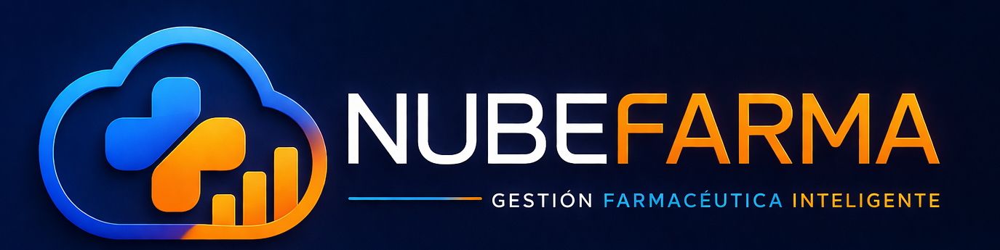

Video 1
Introduccion a NubeFarma
Recorrido general por la plataforma, modulos principales y flujo de trabajo diario.

Videos cortos para aprender a usar NubeFarma: ventas, inventario, clientes, reportes, caja y configuracion.
Cada espacio esta listo para recibir un video desde el codigo. Reemplaza el bloque comentado por un iframe real.
Recorrido general por la plataforma, modulos principales y flujo de trabajo diario.
Como registrar ventas, buscar productos, emitir tickets y cerrar una atencion correctamente.
Gestion de productos, stock, lotes, vencimientos, entradas y alertas de reposicion.
Registro de clientes, historial de compras, puntos, fidelizacion y atencion personalizada.
Control de efectivo, retiros, cierres diarios, turnos y resumen de movimientos.
Consulta de ventas, productos mas vendidos, utilidad, rotacion e indicadores clave.